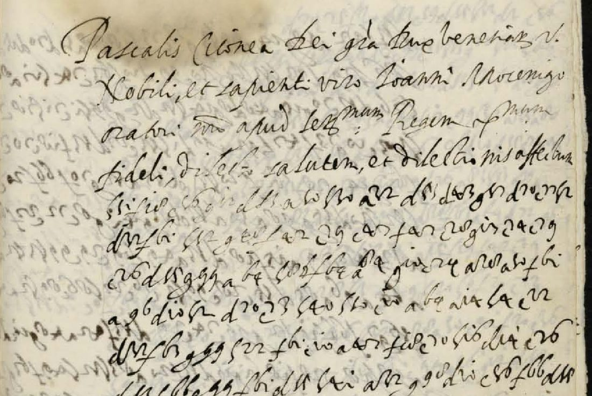
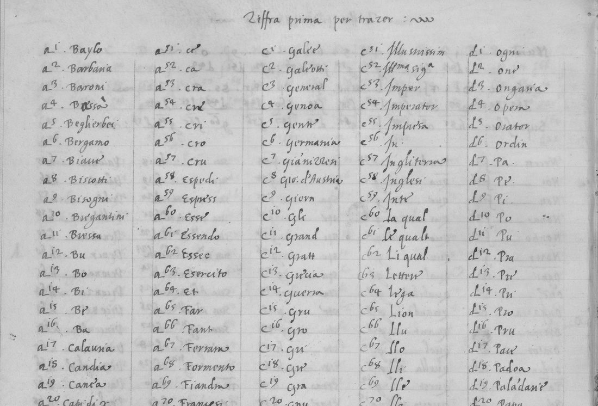
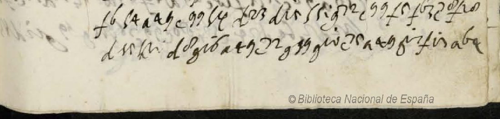
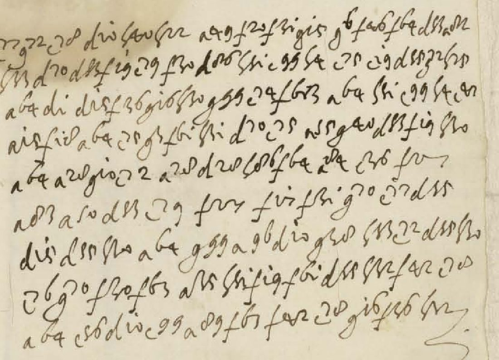

At a glanceExternal key matched · none (key obtained, text not read)
- The letter
- The Doge Pasquale Cicogna and the Senate to Giovanni Mocenigo, Venice’s ambassador with Henry III, dated Venice, 27 April 1589 and signed by the Senate secretary Marco Ottobon. With it is a copy of the Senate’s answer to the French ambassador in Venice.
- Where
- Biblioteca Nacional de España, Mss/994 ff. 34–38, the dossier of Luis Valle de la Cerda, Philip II’s cipher secretary. DECODE R2252, status N/A, cleartext language given as Latin.
- The cipher
- Groups of one base letter (a, c, d, f, g, h) and a figure from 1 to 99. They stand for single letters, syllables, whole words and nulls, all in one table.
- How it was deciphered
- The key is the Council of Ten’s Zifra Prima of 1577–78, a sheet in the Venetian state archive (DECODE R1789). Two extra values were found from context. The first-pass transcription misread the digits in a regular way. It was corrected line by line by hand, then by a decoder and by fitting proposed lines, each checked against a control.
- What it says
- France asked Venice for help for Henry III, and to move the Emperor to help him. The Senate answered that it would intercede with Pope Sixtus V instead, to “ammorzar l’incendio di guerra”.
- Still open
- The letter as a text. 584 groups (37.3%) are unread, mostly on ff. 35v–36v and in gaps on ff. 37r–38r, where the digits of the only scan cannot be told apart, and 155 of the 822 groups of ff. 37r–38r were given values by sense in the crib fit. Counted as holes, neither piece builds sentences (check of 23 October 2026), so both are decoded, not read. A 400-dpi scan or the Senate’s register copy in Venice would settle them.
- Credit
- Valle de la Cerda deciphered the letter at Turin in 1589; his solution is lost. Paolo Bonavoglia described the Council of Ten’s cipher register; Satoshi Tomokiyo described the Zifra Prima sheet and listed the letter as one with no known decipherment.
01 The letter, and how it came to Madrid
Mss/994 of the Biblioteca Nacional in Madrid is the dossier Luis Valle de la Cerda put together of his services to Philip II and Philip III as secretario de la cifra: letters he had deciphered, alphabets he had rebuilt, keys he had made. Item 5, at f. 34, is headed in a cartouche in Spanish: a letter in cipher from Venice, which the Infanta Catalina (Duchess of Savoy) gave to Valle at Turin on the Duke’s orders, “que declaró” (which he deciphered), and which has neither its key nor its decipherment, “por haverse perdido”. The printed catalogue of 1957 adds that the letter is from the secretary Marco Otthobon to the ambassador Juan Mocenigo, 27 April 1589, with an autograph signature. Tomokiyo lists it as a letter of which no decipherment is known.
The letter itself opens in clear Latin, in a chancery hand: Pascalis Ciconia Dei gratia Dux Venetiarum etc. Nobili et sapienti viro Ioanni Mocenigo oratori nostro apud Serenissimum Regem Christianissimum fideli dilecto salutem et dilectionis affectum. So it is not a private letter of Ottobon’s. It is a ducal letter of the Doge and Senate to their ambassador with Henry III, signed at the foot by the secretary of the Senate, as such letters were. The address on f. 38v repeats the ambassador’s title. Pasquale Cicogna was doge from 1585 to 1595. Marco Ottobon (1554–1649), a cittadino originario, was a Senate secretary from 1584 and much later grand chancellor. Giovanni Mocenigo was with the King at Tours that spring, after Henry III’s truce with Henry of Navarre.

The cipher runs over six and a half pages, about 120 lines and 1,528 groups in the first transcription. Part of it is in clear. The last six lines of f. 36r and the first four of f. 36v say why the Senate wrote in cipher: the French postmaster in Venice had shown it a passage from the Lyon postmaster, who had forwarded only a few lines of the ambassador’s despatch of 28 March, “che il rimanente con tutte le altre [lettere] tre sono state intercette”. The dateline (Dat. in nostro Ducali Palatio die xxvii Aprilis … MDLXXXIX) and “Marco Ottobon Secr.” follow on f. 36v. Ff. 37r–38r are a second piece in the same hand, with no protocol, which turns out to be the copy of the Senate’s answer to the French ambassador in Venice (section 04). The Venice–France road crossed Savoy, and that is how the packet reached Turin and Valle.
02 The key: the Council of Ten’s Zifra Prima
The Council of Ten kept its ciphers in registers, now in the Archivio di Stato di Venezia (Consiglio dei Dieci, Cifre, chiavi e scontri di cifra). Register 16 of busta 4 is the cipher book of Hieronimo di Franceschi, described by Paolo Bonavoglia. Its ff. 64–65 hold the Zifra prima in two parts, per scriver (for enciphering) and per trazer (for deciphering). DECODE has the leaves as R1789, dated only “1500–1799”. Tomokiyo describes it as a letter from a to h with a figure from 1 to 99, for letters, syllables and words “without distinction”.

The table was transcribed here from the DECODE images in full: 527 codes. Applied as it stands to the first transcription of the letter, it gave nonsense, although 94.8% of the letter’s groups are codes it defines. The fault was in the transcription. In this hand the 7 is a z-shaped stroke and had been read as 2, the 8 is a small closed loop and had been read as 0, and 3, 5 and 8 had been confused. The first transcription had no 7 at all, in 1,528 groups. With those re-readings the commonest groups fall on the commonest units of the table: a20 becomes a28 che, the c20–c29 run becomes c70–c79 lla lu lo li le la ma me mi mo, g20 becomes g70 da. Usage of the table’s syllables then follows their frequency in Italian (Spearman 0.286, against 0.231 at the 99th percentile of a structured null; p = 0.0008).
Two groups are not on the sheet as needed. d83 is the commonest group of the letter (66 times) and the sheet has no d83; it reads a in context. c86 is Maone on the sheet but reads o in the letter (Serenissim-o, o-ltre, o-ttima), 35 times. Both may be the sheet’s own values miswritten or misread (d53 = a, h86 = o), or homophones added to the 1589 issue. No other group read needs a value the sheet does not give. A second key in the same register (f. 79, DECODE R1790, a small cipher for the Captain in the Gulf, the patrol against the Uskoks and the governors of Zara) and the zifra-granda keys of 1590 and 1595 on DECODE were checked and are different systems.
03 The first piece: the Senate to Mocenigo
The first piece reports a speech by the French ambassador in Venice and the Senate’s answer to it. It is decoded, not read: f. 35r gives a few clauses, ff. 35v–36v mostly gaps and low-confidence lines (5 of 31 sentences clean, 23 October 2026). The text below gives what was decoded, with … for groups left open; lines deciphered with low confidence are left out. It is in the original spelling (u for v, single consonants for double).
f. 35r. […] esposti delli travagli et bisogni […] di Sua Maestà Christianissima … nella sua prima audien[tia] … l’altra che hebbe da noi commemora[t]a … l’amor et afetione grande che quel Serenissimo Re porta alla Republica Nostra, et quanto confidi[a]mo nella cordiale corisponde[nza] … verso […] e ne ricercò che […] procur[asse con] Sua Cesarea Maestà di sovenir Sua Maestà Christianissima in tanta necessità et soministrarle alcun soccorso per proveder al iminente pericolo di quella corona et
“[…] having set out the troubles and needs of His Most Christian Majesty in his first audience, and in the second, which he had with us, recalled the great love and affection that the King bears the Republic, and how far he trusts in our cordial correspondence, he asked us to work with His Imperial Majesty to relieve His Most Christian Majesty in so great a need, and to give him some help to meet the imminent danger to that crown, and …” The lines on the Emperor are deciphered with medium confidence: “procur[asse con]” is a restoration of three doubtful groups.

ff. 35v–36v are the least read pages (48%, 35% and 29% of their groups). The legible stretches carry the thread: assicurar … dalli ne[mici]; the ambassador’s proposal that Venice [giudi]cassimo bene a collegarsi et stringersi maggiormente in qualche unione di lega (“should think it good to join and bind itself more closely in some union of league”); … iscusandosi; risposto quello che vederete della copia che vi mandamo (“answered what you will see from the copy we send you”); et perché informato di [qualche] mutatione et poi lascia[ta] intentione … da alcun degli ministri possiate …; and, just before the clear passage, accioché possiate con[…] … lettere et darci lume delle co[se], asking the ambassador to keep the Senate informed. What Mocenigo was to say at court, and the opening of f. 35v, are not read.
04 The second piece: the answer to the French ambassador
Ff. 37r–38r are the part with most values (70%, 79% and 84%). The reading audit of 22 October 2026 first kept this piece as read; the check of 23 October set it back to decoded, not read, because 155 of its 822 groups are values the crib fit (fit.py) set by sense, and counted as holes with the low lines they leave 12 of 47 sentences clean. What holds as sentences is f. 37r ll. 5–9 (the affection the Republic bears the crown of France) and f. 37v ll. 12–20 (the intercession with the Pope), the passage below. They are the “copia” announced on f. 35v: the Senate’s answer to the French ambassador, then André Hurault de Maisse (see his despatches of 1592–93), whose request it answers point by point (“quanto alle richieste fateci da Vostra […] in nome di quel Serenissimo Re, le dicemo che”). A small heading at the top of f. 37r and its first line, perhaps “[co]pia della risposta fata al Signor …”, are deciphered with low confidence only. The core of the answer, from f. 37v:
… desiderare et procurare il bene, la grande[z]za di quella Serenissima corona et particolar commodo et servitio della sua persona da noi tanto osserva[ta], habbiamo deliberato … interponer al presente … presso lo Sommo Pontifice la intercessione della Republica Nostra, perché Sua Santità si mova a dovere con la sua somma autorità favorire, ove farà bisogno, la causa gi[ustis]sima della Maestà Sua nell’aquetare [le] sollevationi di quel Regno et ammo[rzar] questo incendio di guerra, il qual vede[mo] con gravissimo danno et maggiori perico[li] di tutta la Christianità si va accende[n]do …
“… to desire and procure the good and the greatness of that most serene crown and the particular advantage and service of his person, whom we so much respect, we have resolved … to interpose at present with the Supreme Pontiff the intercession of our Republic, so that His Holiness may be moved, with his supreme authority, to favour where need shall be the most just cause of His Majesty in quieting the risings in that kingdom and putting out this fire of war, which we see kindling with very grave harm and greater dangers to all Christendom …”
Before this the Senate protests “la molta afetione che in tutti li tempi passati” it has borne the crown of France and “la grande stima che facemo della particolar persona di Sua Maestà Christianissima”, and regrets that it cannot now accompany its ready will “[con] effetti”. It closes on f. 38r: potrà Sua Maestà Christianissima conoscere qual […] dell’animo nostro verso la grandezza et ogni prosperità di lei et verso lo bene[ficio] et la quiete della Christianità … nasce da un[a] pronta et disposta volontà.

The answer fits what is known of Venice that spring. It refuses material help and offers mediation at Rome a month before Sixtus V’s monitorium against Henry III (24 May 1589). The Doge’s letters to the Venetian ambassador at Rome, Badoer, of 29 April and 13 May 1589 (printed in Hübner’s Sixte-Quint) use the same language, “la grandezza del pericolo iminente” and “questo incendio universale”. That parallel confirms the subject; it is not a copy of this text, and nothing here was taken from it.
05 Method, and what each step shows
The readings rest on four steps of different strength. They are kept apart here because the later ones depend on the earlier ones.
- Transcription (first pass, September 2026). All seven pages were transcribed from the BNE Digital images, which are the same scans as on DECODE at about 130 dpi: 1,528 groups, 196 distinct. One line read twice from two crops disagreed in three of five groups, so the first pass is about 70% reliable per group. Ciphertext-only annealers, run blind, failed on matched synthetic controls (0–9% of letters recovered with no transcription noise at all), so no attempt was made to break the cipher without a key.
- The key and the hand reading (9 October). With the Zifra Prima transcribed, three readers (this session and two helper agents) went through every line, choosing for each group the code that is compatible with the image and the digit confusions and that makes Italian with its neighbours, and grading each line high, medium or low. Result: 721 of 1,566 groups read (46.0%). The best evidence for the key is here: long runs that read as continuous chancery Italian, such as the end of f. 35r above, from a table made in Venice twelve years before.
- A calibrated decoder (
dec.py). A noisy-channel decoder learns from the hand-read lines how the first pass misreads each base letter and digit, and searches the letter for the code sequence that best combines that confusion model, how often each code is used, and a model of 16th-century diplomatic Italian (Guicciardini, Machiavelli, the papal nuncios’ despatches, and Albèri’s Relazioni degli ambasciatori veneti at double weight). Trained on six pages and tested on the seventh, it agrees with the hand reading on 644 of 721 groups (89.3%), where taking the first pass as it stands agrees on 65.9%. On synthetic text corrupted the same way it recovers 82.6% of groups at the first pass’s error rate, but only 61% at a higher one. This shows the decoder is useful where some sense already anchors a line. It does not by itself read the hard pages: decoding ff. 35v–36v freely gives Italian fragments, not continuous sense. - Fitting proposed lines, with a control (
fit.py,fitcontrol.py). For the remaining lines the reading was done the other way round. An Italian text was proposed for a line (from the hand reading, the decoder’s draft and the context), and the program looked for the code sequence spelling exactly that text whose codes are each a plausible misreading of the transcribed group. A group counts as read only if it lies outside the gaps and its confusion score passes a fixed threshold. Such a fit can always place some letters, so every proposed text was also fitted onto fifteen wrong lines of the letter. At the threshold used, 10% of the groups of a wrong line pass by chance, against 80% on the true lines. Five lines whose fit did not beat the best wrong-line fit by three groups were left at low confidence. This step added 260 groups (46.0% → 62.7%).
What the control does and does not establish. It shows that a proposed text fits its own line far better than it fits other lines. A line that passes is evidence for the proposed text, but not proof of every word. The text came from the reader, a fitted line can still have a wrong word where a wrong code fits about as well, and roughly one group in ten would pass by chance. For that reason no line read only by the fit is graded high: all the high lines (236 groups read) come from the hand reading against the images, and every line on ff. 35v–36v is medium at best. The measure is measure_rd.py: groups in high or medium lines that carry no doubt mark.
| page | groups | hand reading | after the fit |
|---|---|---|---|
| f. 35r | 212 | 134 (63%) | 143 (67%) |
| f. 35v | 249 | 29 (12%) | 120 (48%) |
| f. 36r | 224 | 33 (15%) | 78 (35%) |
| f. 36v | 58 | 10 (17%) | 17 (29%) |
| f. 37r | 342 | 193 (56%) | 240 (70%) |
| f. 37v | 363 | 238 (65%) | 285 (79%) |
| f. 38r | 117 | 84 (72%) | 98 (84%) |
| all | 1,565 | 721 (46.0%) | 981 (62.7%) |
Extent: 981 of 1,565 cipher groups, 62.7%. That is well below the project’s 95% bar. Read as sentences (reading audit, 22–23 October 2026), neither piece holds: the first, ff. 35r–36v, is mostly gaps and fragments, and the second, ff. 37r–38r, rests in part on values set by sense. Both are decoded, not read. On 23 October 2026 DECODE R2252 was fetched again while logged in: the same nine images, about 1,550 px a page, with no attachment, transcription or comment, so no better image or copy was reachable. The key itself is not in doubt as far as the read text goes; what is missing is a sure reading of the digits.
06 What remains uncertain
Grades follow the project’s convention: H high-confidence lines from the hand reading against the key and the images (236 groups read); M medium lines, from the hand reading or the fit (745 groups read); letters in square brackets are supplied from sense (I).
- ff. 35v–36v, about 316 groups unread (f. 35v ll. 3–6, 10–11, 15, 20; f. 36r ll. 4, 6, 8–11, 14–16; f. 36v ll. 2–3, 5–6; and gaps inside read lines). The digits of the only scan cannot be separated (2/7, 3/5/8, 0/8), the bleed-through is heavy, and these lines have no anchoring phrase from which to choose. Needs a 400-dpi reproduction of ff. 35–38 from the BNE, or the Senate’s register copy.
- f. 35r ll. 1–3 and 12, about 69 groups with the gaps in read lines: under the water stain at the head of the leaf, or too faint.
- ff. 37r–38r, about 199 groups (f. 37r ll. 1–2, 7, 10, 22, 24; f. 37v ll. 1, 3; gaps inside read lines): unresolved digits and losses in the gutter. The heading line “[co]pia della risposta fata al Signor …” is low confidence, and the identification of the second piece as the answer to the French ambassador rests on f. 37r ll. 15–16 (medium).
- The four small groups at the top right of f. 37r: too small to transcribe at this resolution.
- d83 = a and c86 = o are found from context, not from the sheet (I, though well supported: 66 and 35 occurrences).
- f. 35r l. 14, “procur[asse con] Sua Cesarea Maestà”: the request to approach the Emperor is deciphered from the two nomenclator groups for His Imperial and His Most Christian Majesty (M); the verb before them is a restoration (I).
- The French ambassador is named here as de Maisse because he held the Venice embassy at the time; the letter as read does not name him.
The Senate’s register (ASVe, Senato, Deliberazioni Secreta, 1589, under 27 April) should hold the plain text of both pieces, and de Maisse’s letter-book “avec les responses” (British Library, Add MS 30635–30637) the answer. Neither is online. Either would turn the remaining gaps into a matter of applying the key, and would check every reading on this page.
Full texts
The transcription and the decryption of every document on this page, so that the reading can be used and checked. Short files are shown here; all are in the repository.
First piece, ff. 35r-36v: the Senate to Mocenigo, 27 April 1589 decoded, not read
The Senate tells its ambassador Giovanni Mocenigo that the French ambassador, setting out the troubles and needs of Henry III, asked Venice to help him (with the Emperor) against the imminent danger to the crown, and sends a copy of its answer. Read only in part: ff. 35v-36v are mostly unread because the digits are unresolved on the available images.
A mechanical decode with holes in most sentences: shown so that the transcription and the key can be checked and improved, not as a reading.
Transcription
# f. 35r (hi05 right). Lines 1-4 clear Latin protocol (Pascalis Ciconia ... affectum). Cipher lines P1-P17; P1 lies under the stain. # f.35r l.1 h51 h10 c50? d53? a20 h50 a22 d51 d83 g50 d20 c25? # f.35r l.2 d13 f61 h52 g16 h42 c29 c40 f42 c20 g15 c24 c29 # f.35r l.3 c26 d83 g99 a64 c86 f64 a84 g14 c24 a20 a20 f61 # f.35r l.4 a96 d10 h52 d20 c23 h40 h20 c20 a64 a14 h4 c22 # f.35r l.5 d83 f61 g99 h22 f51 c10 a20 f10 c20 h16 d11 c26 # f.35r l.6 d83 c66 g99 f61 d15 h51 a22 g90 d10 c86 f66 d15 # f.35r l.7 f9 d83 a20 c40 a15 g20 f26 a49 c22 c29 g14 d83 # f.35r l.8 a90 a30 c64 d83 c2? c99 a64 d83 a82 h20 d22? # f.35r l.9 c11 h51 a20 g10 f44 c86 g15 d10 g99 h50 d83 c20 # f.35r l.10 a15 d11 d54 c23 a51 f20 d83 a64 g9 c86 a83 a81 g99 7? # f.35r l.11 f18 c20 a49 c99 g99 d83 c24 a49 g16 a96 d10 d83 g23? # f.35r l.12 d15 h2 d20 d81 a82 h4 c20 c54 d15 f19 c29 f42 h86? # f.35r l.13 h51 c99 h4 f9? c24 f61 f10 g16 a51 c99 a49 a25 # f.35r l.14 g2 d83 c50 g20 d15 h21 g99 h4 h51 f19 c99 h22 # f.35r l.15 c50 a89 d83 f25 h1 h50 a64 h4 c20 f19 a96 h40 c99 c24 # f.35r l.16 f6 h4 a45? c99 h4 d23 d15 h51 g12 c99 f2 f63 c20 f10 # f.35r l.17 d15 h51 d8 g16 a49 d22 g99 g10 c25 a49 g12 f15 a64
Transcription
# f. 35v (hi06 left), 21 lines; line ends run into the gutter, last token often lost. # f.35v l.1 d83 f42 a49 g14 c99 h83 g23? c23 f10 c23 a20 d20 a? # f.35v l.2 h86 h29 d23 h83 f64 h20 c99 d10 f63 c24 h1? # f.35v l.3 h86 d83 c20 g15 a20 d8? g14 h22 d22 g99 h1 c21 h2? # f.35v l.4 h22 c10 g23 f22 h52 g99 h1 h83 c21 d83 f10 c? # f.35v l.5 f61 g14 a20 h1 f20 h22 d83 a22 g20 f66 f? # f.35v l.6 h52 h20 d55 a90 a30 a15 d13 g41 g8 c22 c23? # f.35v l.7 a52 f42 c29 a15 f10 d83 a49 c69 c29 g99 h3? a? # f.35v l.8 a64 a96 a85 d15 c20 c99 h3 c26 c22 c86 c89 h2? # f.35v l.9 c86 g2? f66 f19 h2 g99 c24 c29 d83 f42 a49 g? # f.35v l.10 a90 f10 a20 f10 h19 g16 d11 f20 a83 h52 c49 f6? # f.35v l.11 c21 c99 c27? a64 d11 h50 d11 h50 c20 c86 h3? # f.35v l.12 h52 h52 a20 h1 d11 f42 c29 g22 h1 g22 g14 g15 a? # f.35v l.13 g6 h16 d11 d10 g20 f63 a96 a20 h1 d15 g90 h3 f? # f.35v l.14 a49 c23 d83 f63 c29 h12 c21 d11 h52 a64 d23 f? # f.35v l.15 f30 f61 c29 h52 f42 c20 a16 f20 h52 g99 f22? # f.35v l.16 h31 c99 c30 h49 g99 a96 a83 g15 a22 h83 c24 a? # f.35v l.17 h52 h10 h16 h83 g15 f42 c29 d10 h51 c99 a61 h2? # f.35v l.18 g16 a96 d10 h13 g10 c22 a20 h51 g22 g15 h51 g22 # f.35v l.19 a49 d9 d83 a20 h52 c84 g20 c99 a49 f64 f? # f.35v l.20 c86 a92 c21 h1 f10 c69 d11 f63 d23 h20 d11 c5? # f.35v l.21 h52 d22 a64 d24 c86 a80 c99 c26 h83 g59 g1?
Transcription
# f. 36r (hi06 right). 18 cipher lines, a 19th short line "g16 :" then six clear lines: # "Il m.ro delle poste di Francia / che sta in questa città, ne ha mostrato / un capitolo di l[ette]ra scrittegli da quello / # di Lione, che coll'occasione d'inviargli / lettere sue gli manda anco le 4? sole altre? / righe delle l[ette]re di 28. del passato, dicendo[gli]" # Lines slope upward to the right; crops overlap; the two readings of line 18 disagree (see NOTES). # f.36r l.1 c50 h50 h52 d2 a64 d29 c25? f52? d83 c59 d15 h52 d2 c86 # f.36r l.2 f61 h51 d11 h83 a20 h51 f10 f46 d20 g99 c21 h83 g20 h22 c86 # f.36r l.3 g20 f6 g22 c10 c28 f19 a96 a85 d10 f42 d83 h51 h2? a22 g90 # f.36r l.4 g8? c66? a49 g15 d83 h50 c26 h51 g99 f11 c99 h52 a83 a80 # f.36r l.5 c39 c22 f5 h4 d15 c4 f20 c86 a64 g16 a96 d10 d15 g22 c99 # f.36r l.6 c86 g10 c25 c59 d83 h52 a20 c20 g19 f26 a83 h83 g99 g1? # f.36r l.7 f10 h51 g6 a? h24 a83 g15 h51 g10 c9 d83 f61 a24? g22 a96 # f.36r l.8 a85 c86 a80 a30? c63 a20 h1 d13 g41 a15 f19 f42 c29 # f.36r l.9 c66 h1 g15 d83 a81 c40 a20 h83 a49 f20 c66 f20 c27 # f.36r l.10 c22 f66 g40 c42? c28 g16 h26 h22 a80 a50 c41 f20 c36 # f.36r l.11 c40 h51 f21 h83 g99 f20 d10 h51 g99 c50 g16? d83 # f.36r l.12 c86 a85 h52 d2 a4? g99 a96 a83 g15 d83 f20 c29 g22 # f.36r l.13 c2? d8 a64 d83 c20 c86 h52 c26 g99 a96 d10 h52 h51 d2 # f.36r l.14 h50 d83 h51 g99 h4 g10 c21 f44 d83 a49 g15 f20 # f.36r l.15 f20 d83 h4 a22 c99 f66 d83 h4 c29 g22 h19 h22 # f.36r l.16 a22 c22 h86 d15 h20 a?? f?? # f.36r l.17 a16 h86 a99? d1 c11 h51 h2 a64 d1 f26 g16 h20 # f.36r l.18 g16
Transcription
# f. 36v (hi07 left). Clear Italian lines 1-4, then a mixed line and 5 cipher lines, then the dateline and signature. # Clear: "che il rimanente con tutte le altre [lettere?] tre sono state intercette in quelle [parti], onde continuamo # scriver ... [cipher] ... ogni rispetto? notitia, ..." ; "Dat. in nostro Ducali Palatio die xxvii Aprilis Ind. [..] MDLXXXIX"; "Marco Ottobon Secr." # Line centres were set by hand and the crops overlap; lines 2 and 5 are the least certain. # f.36v l.1 =notitia= f1 a20 d10 f42 d83 h51 a85 a89 c4? # f.36v l.2 c25 c86 c95? a56? h3? a29 h86 d15 a89? c4? # f.36v l.3 f6 f9 d83 a96 h50 a20? a23 c50 h52 d15 c9? # f.36v l.4 c63 a64 g20 c99 a50 c11 c22 d20 c24 a49 h? # f.36v l.5 d86 a49 g15 h2? f22 c23 d3? c2? d8 h1? # f.36v l.6 g99 f20 d83 h51 f? h20
Decryption
# f35r reading, re-fitted 2026-10-09 by refit.py (fit.py crib fit of the Italian onto the first-pass tokens; # '?' = token in a gap, or channel log-prob < -5). Earlier hand pass in rd_hand1/. # f.35r l.1 ct: h51 h10 c50? d53 a28 h50? a2? d51 d53 g5? d70 c75 rd: ve stre ? a che va? ? tt a ? del la it: [...] vestre? [...] a che [...] [...] della conf: low (under the stain) # f.35r l.2 ct: d13 f61 h52? g16 h42? c79 c40? f42 c7? g15 c74 c79 rd: pre e vi? ri Tiene? mo he? ssi ? re le mo it: [...] conf: low # f.35r l.3 ct: c76? d83? g99? a64 c86 f64 a84 g14? c74? a28? a28 f61 rd: ma? a? di? et o l tre ra? le? che? che e it: ... et oltre ... che e conf: low # f.35r l.4 ct: a96 d10 h32 d70 c73 h40 h50? c10? a64 a14 h4 c22 rd: s po ti Del li tra va gli et bi so gni it: -sposti delli travagli et bisogni conf: medium (h20 -> h50, c20 -> c10 are two non-class re-readings forced by sense) # f.35r l.5 ct: d83? f61 g99 h22 f61 c10 a28 f18 c70 h16 d14? c76 rd: a e di Sua M.ta Christianissima e gli che ne lla sua pri ma it: [...] di Sua Maestà Christianissima, e gli che nella sua prima conf: medium (image: second f is f61, not f51; d11 read as d14) # f.35r l.6 ct: d83 f66 g99 f61 d55 h51? a22? g98 d10 c86? f66 d55 rd: a u di e n ue? cardinal? do po o? u n it: audien... ... dopo ... un conf: medium # f.35r l.7 ct: f9 d83 a28 c40 a15 g70 f26 a49 c77? c79 g14 d83 rd: Altr a che he be da Noi co me mo ra a it: l'altra che hebbe da noi commemora[t]a conf: medium # f.35r l.8 ct: a90 a50? f64 d83 c79 c99 a64 d83 a82 h32? d2? rd: tempo ci? l a mo r et a fe ti one it: [...] tempo [...] l'amor et afetione conf: medium (c64 of the first pass is f64 on the image; h20 d22 read as h32 d2) # f.35r l.9 ct: c11 f61 a28 g10 f44 c86 g15 d10 c99 h30 d83 c70 rd: Grand e che quel Serenissim o re po r ta a lla it: grande che quel Serenissimo Re porta alla conf: high (image: f61 not h51, c99 not g99, h50 = h30) # f.35r l.10 ct: g15 d11 d54 c73 a52 f30 d83 a64 g9 c86 a35? a81 g99 c79? rd: re pu b li ca Nostr a et quant o Con fi di mo it: Republica Nostra, et quanto confidi[a]mo conf: medium # f.35r l.11 ct: f18 c70 a49 c99 g99 d83 c74 a49 g16 a96 d10 d55 g72 rd: ne lla co r di a le co ri s po n de it: nella cordiale corisponde[nza ...] conf: high # f.35r l.12 ct: d15 h2 d70 d81 a82? h4 c86? c54? d15 f19 c79 f42 h86 rd: pro se Del u fe? so o Imperator? pro ni mo ssi o it: [...] conf: low # f.35r l.13 ct: h51 c99 h4 f9? c74? f61 f18 g16 a51 c99 a49 a28 rd: ve r so Altr? le? e ne ri ce r co che it: verso [...] e ne ricercò che conf: medium # f.35r l.14 ct: g2? d83 c50? g70 d15 h21 g99 h4 h51 f19 c99 h22 rd: que a ? da pro Sua Cesarea M.ta di so ve ni r Sua M.ta Christianissima it: [...] procur[asse con] Sua Cesarea Maestà di sovenir Sua Maestà Christianissima conf: medium # f.35r l.15 ct: c56? a89 d83 f25 h1? h30 a64 h4 c78 f19 a96 h40 c99 c74 rd: in tant a Necess sa? ta et so mi ni s tra r le it: in tanta necessità et soministrarle conf: high # f.35r l.16 ct: f6 h4 a49 c99 h4 d23 d15 h51 g72 c99 f5 f63 c78 f18 rd: Alcun so co r so Per pro ve de r Al i mi ne it: alcun soccorso per proveder al imine- conf: high # f.35r l.17 ct: d55 h31 d8 g16 a49 c72? g99 g10 c75 a49 g17 f17 a64 rd: n te pe ri co lo? di quel la co ro na et it: nte pericolo di quella corona et conf: high
Decryption
# f35v reading, re-fitted 2026-10-09 by refit.py (fit.py crib fit of the Italian onto the first-pass tokens; # '?' = token in a gap, or channel log-prob < -5). Earlier hand pass in rd_hand1/. # f.35v l.1 ct: d83 f42 a48 g14 c99 h53? g73 c73 f18 c73? a28 d70? a64? rd: a ssi cu ra r uo? dal li ne li? che del? et? it: assicurar ... dalli ne ... che ... conf: medium # f.35v l.2 ct: h86? h79? d23 h53 f64 h30 c99 d10 f63 c74 h1? rd: o? zu? per uo l ta r po i le sa? it: ... per uoltar poi le ... conf: medium # f.35v l.3 ct: h86? d83 c70? g15 a28 d8 g14 h22? d7? g99 h1 c71? h3? rd: o? a lla? re che pe ra SuaM.taChrist? pa? di sa lu? si? it: [...] alla? re[...] che [...] Sua Maestà Christianissima? [...] conf: low # f.35v l.4 ct: h32? c10 g73 f27? h52 g99 h1 h83 c71 d83 f18 c? rd: ti? gli dal Non? vi di sa _ lu a ne ? it: [...] conf: low # f.35v l.5 ct: f61 g14 a28 h4? f20 h22? d83 a22? g70 f66 f? rd: e ra che so? no ? a ? da u ? it: [...] che sono? [...] conf: low # f.35v l.6 ct: h52? h20? d55? a90? a30? a15? d13 g41 g8? c72? c73? rd: ? ? ? ? ? ? pre sso quand? lo? li? it: [...] conf: low # f.35v l.7 ct: a52 f42 c79 a15 f18 d83 a49 c69 c29 c99 h3 a64? rd: ca ssi mo be ne a co lle ga r si et? it: ... cassimo bene a collegarsi ... conf: medium # f.35v l.8 ct: a64 a96 a85 d55 c28 c99 h3 c76 c27 c86 c89 h2? rd: et s tri n ge r si ma gi o mente se? it: et stringersi magio ... mente ... conf: medium # f.35v l.9 ct: c56 g7 f66 f19 h2? g99 c74 c29 d83 f42 a48 g99? rd: in qualche u ni se? di le ga a ssi cu di? it: in qualche uni ... di lega assicu ... conf: medium # f.35v l.10 ct: a98? f18 a28 f18 h19? g16 d11? f20? a83 h52? c49? f6? rd: m? ne che ne suo? ri pu? no? fa vi? il qual? Alcun? it: [...] che ne [...] conf: low # f.35v l.11 ct: c21? c99 c27? a64 d11? h50? d11? h50? c20? c86? h3? rd: ? r gi? et ? ? ? ? ? ? ? it: [...] et [...] conf: low # f.35v l.12 ct: h52? h52? a28 h1? d11? f42 c79 g72 h3? g72 g14 g15 a64? rd: ui? ui? che sa? pu? ssi mo de si? de ra re et? it: ... che ... ssimo desiderare ... conf: medium # f.35v l.13 ct: g6 h16 d11? d10? g70? f63 a96 a48 h1 d55 g98 h3 f61? rd: qual sua pu? po? da? i s cu sa n do si e? it: qual sua ... iscusandosi ... conf: medium # f.35v l.14 ct: a49 c73 d83 f63 c79 h52 c77 d55? h32 a64 d23 f26 rd: co li a i mo ui me n? ti et per noi it: ... coli ai mouimenti et per noi conf: medium # f.35v l.15 ct: f30? f61? c79? h52 f42 c70? a16? f20? h52 g99 f22? rd: ? ? mo? vi ssi ? ? ? vi di ? it: [...] conf: low # f.35v l.16 ct: h31? c99? c30? h4? g99 a96 a83 g15 a32 h53 c74 a64? rd: te? r? habbia? so? di s fa re come uo le et? it: ... sodisfare come uole ... conf: medium # f.35v l.17 ct: h52? h18? h16? h53? g15 f42 c79 d10 h31 c99 a61 h3 rd: ui? sui? sua? uo? re ssi mo po te r essendo si it: ... re ssimo poter essendosi conf: medium # f.35v l.18 ct: g16 a96 d10 h7? g10 c72 a28 h51 g72 g15 h31 g72 rd: ri s po sto? quel lo che ue de re te de it: risposto quello che uederete de conf: medium # f.35v l.19 ct: a49 d9 d83 a28 h52 c84 g70 c79 a49 f64 f61? rd: co pi a che ui man da mo co l e? it: copia che ui mandamo col ... conf: medium # f.35v l.20 ct: c56 a92? c71? h1? f18 c69 d83? f63? d23 h20? d11? c5? rd: in #8? lu? sa? ne lle a? i? Per ? ? ? it: in [...] nelle [...] per [...] conf: low # f.35v l.21 ct: h52? d22? a64 d24 c56 a80 c99 c76 h33 g59 g1? rd: ui? parma? et perche in fo r ma to d qua? it: ... et perche informato d ... conf: medium
Decryption
# f36r reading, re-fitted 2026-10-09 by refit.py (fit.py crib fit of the Italian onto the first-pass tokens; # '?' = token in a gap, or channel log-prob < -5). Earlier hand pass in rd_hand1/. # f.36r l.1 ct: c80? h30 h32 d2 a64 d39 c75 f32 d83 c59 d55 h32 d2 c86? rd: mu? ta ti one et poi la sci a inte n ti one o? it: mutatione et poi lascia ... intentione ... conf: medium # f.36r l.2 ct: f61 h51 d55? h33 a28 h51 f18 f46 d70 g99 c21? h53? g70 h22 c86? rd: e ue n? to che ue ne sia del di gno? uo? da sua~maesta~christianissima o? it: euento che ue ne sia del di ... da Sua Maestà Christianissima ... conf: medium # f.36r l.3 ct: g70 f6 g72 c10 c78 f19 a96 a85 d10 f42 d83 h31 h2? a22? g98? rd: da alcun de gli mi ni s tri po ssi a te se? cardinal? do? it: da alcun degli ministri possiate ... conf: medium # f.36r l.4 ct: g8? c66? a49 g15 d83 h50 c26 h51 g99 f11? c99 h52 a83 a80 rd: quand? ? co re a ta? ma? te di ? r vi fa? fo? it: [...] conf: low # f.36r l.5 ct: c39? c72? f5? h4? d15? c4? f20? c86? a64 g16 a96 d10 d55 g72 c99 rd: hi? lo? al? so? pro? genoa? no? o? et ri s po n de r it: ... et risponder conf: medium # f.36r l.6 ct: c86 g10 c75 c59? d83 h52 a28 c20? g19? f26 a83? h83 g99 g1? rd: in quel la ? a vi? che ? ? Noi ? _ di qua? it: in quella [...] che [...] noi [...] di qua[...] conf: low # f.36r l.7 ct: f18? h51? g6 a28 h24? a83 g15 h31 g10 c9 d83? f61? a34 g72? a96? rd: ne? ue? qual che sua~serenita? fa re te quel giorn a? e? comunica de? s? it: ... qualche ... farete quel giorn ... comunica ... conf: medium # f.36r l.8 ct: a85? c86? a80? a30? c63 a28 h1? d13? g41? a15 f19 f42 c79 rd: tri? o? fo? cypro? lettere che sa? pre? sso? be ni ssi mo it: ... lettere che ... benissimo conf: low # f.36r l.9 ct: c66? h1 g15 d83 a81? c40? a28 h83 a49 f20 c66? f20 c27? rd: ? sa re a ? ? che _ co no ? no ? it: [...] che cono[sc]ono? [...] conf: low # f.36r l.10 ct: c22? f66 g40 c42? c28? g16 h26? h22? a80? a50? c41 f20 c36? rd: ? u sti ia? ? ri ? ? ? ? ha no ? it: [...] hano? [...] conf: low # f.36r l.11 ct: c40? h51 f21 h33 g99 f20 d10 h51 g99 c50? g16? d83 rd: ? ve nu to di no po te di ? ri a it: [...] venuto di [...] conf: low # f.36r l.12 ct: c86? a85? h52? d2? h4 g99 a96 a83 g15 d83 f20 c77 g72 rd: ? ? ? ? so di s fa re a no me de it: [...] sodisfare a nome de[l]? [...] conf: medium # f.36r l.13 ct: c2? d8? a64 d83 c70 c86 h32 c76 g99 a96 d10 h3 h32 d2 rd: ? pe? et a lla o tti ma di s po si ti one it: [...] et alla ottima dispositione conf: medium # f.36r l.14 ct: h50? d83? h51? g99? h4? g10 c75 f44 d83 a49 g17 f20? rd: ua? a? ue? di? so? quel la serenissim a co ro no? it: ... quella serenissima coro ... conf: low # f.36r l.15 ct: f20? d83 h4 a22? c99 f66 d83 h4 c29? g72? h19? h22? rd: ? a so ? r u a so ? ? ? ? it: [...] conf: low # f.36r l.16 ct: a22? c22? h86 d15? h20? a? f? rd: ? ? o ? Sua Santità? ? ? it: [...] Sua Santità? [...] conf: low # f.36r l.17 ct: a16? h86? g99? d1 c11 h51? h2? a64 d1 f36 g16 h30 rd: ba? o? di? ogni grand ue? se? et ogni spe ri ta it: ... di ogni grand ... et ogni ... sperita conf: medium # f.36r l.18 ct: g16 rd: ri it: ri[...]? conf: low
Decryption
# f36v reading, re-fitted 2026-10-09 by refit.py (fit.py crib fit of the Italian onto the first-pass tokens; # '?' = token in a gap, or channel log-prob < -5). Earlier hand pass in rd_hand1/. # f.36v l.1 ct: =notitia=? f1 a28 d10 f42 d83 h31 a35 a89? c4? rd: ?? accio che po ssi a te con tant? genoa? it: ... accioche possiate con ... conf: medium # f.36v l.2 ct: c75? c86 c99? a96? h3? a29? h86? d15? a89? c4? rd: la? o r? s? si? ? o? ? ? ? it: [...] conf: low # f.36v l.3 ct: f6 f9 d83 a96 h50? a28? a23? c50? h52? d15? c9? rd: Alcun Altr a s ? che? ? ? ? ? ? it: alcun'altra [...] che? [...] conf: low # f.36v l.4 ct: c63 a64 g70 c99 a50 c71 c77 d70 c74 a49 h4? rd: lettere et da r ci lu me del le co so? it: lettere et darci lume delle co ... conf: medium # f.36v l.5 ct: d86? a49 g15? h2? f22? c23? d3? c2? d8? h1? rd: ? co re? se? ? ? ? ? pe? sa? it: [...] conf: low # f.36v l.6 ct: g99 f20 d83 h51 f? h20? rd: di no a ve ? ? it: [...] conf: low
Decryption
# Ottobon 1589: Italian text as read with the Zifra Prima (R1789) key; hand reading 9 Oct 2026, re-read with the # dec.py/fit.py crib fit the same day (texts_reread.txt). One paragraph per page, joined from the it: lines of # rd_<page>.txt; lines marked (low) are not counted as read. [...] / ... = unread; ? = doubtful. ## f.35r [...] vestre? [...] a che [...] [...] della (low) / [...] (low) / ... et oltre ... che e (low) / -sposti delli travagli et bisogni / [...] di Sua Maestà Christianissima, e gli che nella sua prima / audien... ... dopo ... un / l'altra che hebbe da noi commemora[t]a / [...] tempo [...] l'amor et afetione / grande che quel Serenissimo Re porta alla / Republica Nostra, et quanto confidi[a]mo / nella cordiale corisponde[nza ...] / [...] (low) / verso [...] e ne ricercò che / [...] procur[asse con] Sua Cesarea Maestà di sovenir Sua Maestà Christianissima / in tanta necessità et soministrarle / alcun soccorso per proveder al imine- / nte pericolo di quella corona et ## f.35v assicurar ... dalli ne ... che ... / ... per uoltar poi le ... / [...] alla? re[...] che [...] Sua Maestà Christianissima? [...] (low) / [...] (low) / [...] che sono? [...] (low) / [...] (low) / ... cassimo bene a collegarsi ... / et stringersi magio ... mente ... / in qualche uni ... di lega assicu ... / [...] che ne [...] (low) / [...] et [...] (low) / ... che ... ssimo desiderare ... / qual sua ... iscusandosi ... / ... coli ai mouimenti et per noi / [...] (low) / ... sodisfare come uole ... / ... re ssimo poter essendosi / risposto quello che uederete de / copia che ui mandamo col ... / in [...] nelle [...] per [...] (low) / ... et perche informato d ... ## f.36r mutatione et poi lascia ... intentione ... / euento che ue ne sia del di ... da Sua Maestà Christianissima ... / da alcun degli ministri possiate ... / [...] (low) / ... et risponder / in quella [...] che [...] noi [...] di qua[...] (low) / ... qualche ... farete quel giorn ... comunica ... / ... lettere che ... benissimo (low) / [...] che cono[sc]ono? [...] (low) / [...] hano? [...] (low) / [...] venuto di [...] (low) / [...] sodisfare a nome de[l]? [...] / [...] et alla ottima dispositione / ... quella serenissima coro ... (low) / [...] (low) / [...] Sua Santità? [...] (low) / ... di ogni grand ... et ogni ... sperita / ri[...]? (low) ## f.36v ... accioche possiate con ... / [...] (low) / alcun'altra [...] che? [...] (low) / lettere et darci lume delle co ... / [...] (low) / [...] (low) ## f.37r [...] Cardinal [...] perche l' [...] (low) / della risposta fata al Signor ... (low) / ...ne la molta a...fetione che in tutti li tempo / passati e da [...] portava, et [tutt]avia / porta la Republica Nostra alla Serenissim- / -a corona di Francia, e come ben nota ad ogni- / -uno, [...] chiarissimo [...] cor d- / [...]re che portamo et la grande stima / che facemo della particolar persona ... / Sua Maestà Christianissima, per [...] sen[ti]mo quel dis[pia]ce[re] molto delle / [...]tione di quel Regno et delli travagli della Ma- / esta sua che ... portamo reciproca bona / intelligentia, et che ci sforza l'otti- / ma dispositione et osseruanza / ... a uerso di lei quanto alle richi / este fateci da Vostra ... in nome / di quel Serenissimo Re, le dicemo che [...] i / trauagli di Sua Maestà Christianissima ne sono tanto piu graui / quanto che ... di non poter hora / con la nostra pronta uolonta uerso / ... seruitio di lei aconpagna / -r [...] effetti, con altre vi[e] [...] (low) / ... che la conditione de tempo present / [...] per li giorn[i] [...] che [...] (low) ## f.37v [...] da diversi [...] che consa- (low) / pe del suo re et prouedere alla conser / et [...] delle cose [...] (low) / per dare a Sua Maestà Christianissima quel ma[g]gio[r] [...] / che per noi si puo al present e della pro ... / ... a et continuata uolonta ... / desiderare et procurare il bene ... / la grande[z]za di quella Serenissima corona et / particolar commodo et servitio / della sua persona da noi tanto osser / -va[ta], habbiamo deliberato, come [...] facessi[...] / per occasione delle [...] di [...] inter- / poner al present e ancorche no ... et ... / ... presso lo somo pontifice la inte r / ssione della republica nostra perche sua santi / si moua a douere con la sua soma autorita / fauorire oue fara bisogno la causa gi ... / ssima della maesta sua nell aquetare ... / sollevationi di quel regno et a mo ... / questo incendio di guera il qual uede ... / con grauissimo dano et magiori perico / di tutta la cristianita si ua acende / do da questi ... ne speramo noi per / prudentia et pietà della Santità Sua / ueder partorir alcun ... et dare al ## f.38r lo della potra sua maesta christianissima conoscere qual ... la fe ... / [...] dell'animo nostro verso la grandezza / et ogni prosperita di lei et uerso lo / bene[ficio] et la quiete della Christianità / et che quello ... che piu oltre ... / faciamo no nasce da un / pronta et disposta uolonta / ma da noi conuenientissima / et inportantissima ri ...
Second piece, ff. 37r-38r: copy of the Senate's answer to the French request decoded, not read
The Senate assures Henry III of the Republic's affection for the French crown and resolves to interpose its intercession with Sixtus V, so that the Pope will favour the King's just cause in quieting the risings in his kingdom and quenching the fire of war, weeks before the monitorium against Henry III of 24 May 1589.
A mechanical decode with holes in most sentences: shown so that the transcription and the key can be checked and improved, not as a reading.
Transcription
# f. 37r (hi07 right). Second piece, first page. Header line at top right (small): c4? f13? 4? c3? -- not transcribed. # Conventions as ct_f38r.txt. '?' = doubtful token. Line numbers are page lines (P1 = first cipher line). # f.37r l.1 d83 g51 a22 da1? d83 d50 g61 d83 d24 f64 a29 d8 d83 # f.37r l.2 d20 a25 g83 g30 a83 h30 f5 f42 c26 d15 g99 f10 g99 a1 # f.37r l.3 f82 f10 c25 c91 d83 d11 a82 h52 d2 a20 c86 h49 f63 c23 a90 # f.37r l.4 d2 f40 h52 f61 g20 h20 d10 c99 h50 h50 a64 c29 d83 h52 d83 # f.37r l.5 d10 c99 h20 c25 g15 d11 d54 c23 a52 f30 d83 d83 c20 f44 # f.37r l.6 d83 a49 g15 f15 g99 a21 f61 a82 a15 d85 f20 h30 f3 d1 # f.37r l.7 f66 f20 g95 c80 f42 a29 d83 g16 f42 c29 c82 a49 c99 g59 # f.37r l.8 d15 c24 d83 c23 g15 a20 d10 c99 h20 c29 a64 c20 c11 f61 g40 c26 # f.37r l.9 a20 a83 a51 c29 d20 c25 d2 c99 h52 a49 c25 c99 d23 h4 f10 g51 # f.37r l.10 h22 d23 c82 h2 d85 h4 c29 g10 g99 f25 d11 a51 c91 d20 c24 # f.37r l.11 h42 c24 h52 d2 g99 g10 g29 a64 d20 c23 h40 h50 c10 d20 c25 c26 # f.37r l.12 f61 g20 h16 a20 a55 d10 c99 h50 c29 g15 a50 d15 a52 a13 f10 # f.37r l.13 c59 c23 c20 d85 ha1? a64 a20 a50 a96 a80 c99 h25 f64 c86 h22 # f.37r l.14 c26 g99 a96 d10 h52 h22 d2 a64 c86 f41 c99 h30 d85 h22 # f.37r l.15 h20 d83 h51 c99 h49 g99 c24 f63 g9 c86 d83 c29 g16 a29 # f.37r l.16 f61 g39 a83 h51 a50 g20 h20 d13 f20 f63 d13 c86 f20 c? # f.37r l.17 g99 g10 f44 c86 g15 c24 g99 a51 c29 a20 f63 d83 h6? # f.37r l.18 h40 h20 c10 g99 h22 f15 h24 f20 a89 c86 d20 c19 h22 # f.37r l.19 g9 c86 a20 h19 g99 d13 c29 g99 f20 d10 h51 c99 c36 # f.37r l.20 a85 c25 f20 d83 d11 d85 h20 h13 c24 d15 h20 h1 c99 h4 # f.37r l.21 c22? h22 c99 h22 h22 c86 g99 c22 f63 d83 a25 d2 c24 # f.37r l.22 c99 d23 g16 f61 a82 h22 a25 f9 f61 h22 f64 h1 c20 # f.37r l.23 c29 a83 h13 d10 f6 a20 c21 a55 g99 h24 d2 g22 a90 d22 # f.37r l.24 f63 f61 a83 h50 h20 d24 d23 c23 c9 h22 c15 f63 a20 h13
Transcription
# f. 37v (hi08 left). Second piece, second page, 25 lines, the right ends run into the gutter (last token of many lines lost). # f.37v l.1 c86 g99? f20 g20 g99 h51 c99 h52 d20 g99 h52 a20 a35 h1 # f.37v l.2 d8 d20 h19 g15 a64 d15 h51 g22 g15 d13 c20 a35 h2 g95 # f.37v l.3 a64 h3 a20 c99 h50 d20 c21 a29 h2 f3 f61 h49 d1 # f.37v l.4 d23 g20 g15 d83 h22 g10 c26 c21 h86 h19 h40 c29 f? # f.37v l.5 a20 d23 f26 h3 d11 c86 f5 d12 f61 d20 c25 d15 d? # f.37v l.6 f20 d83 a64 a25 h22 f21 d85 h50 h13 c22 d55 h50 f10 f? # f.37v l.7 g22 h30 g22 g14 g15 a64 d15 a20 g14 g15 c22 a15 f1? # f.37v l.8 c25 c11 f61 h52 g99 g10 c25 f44 d13 a20 g15 f21 a6? # f.37v l.9 d2 c99 h52 a20 c25 c99 a20 c99 g90 a64 h2 c99 h22 h5? # f.37v l.10 d20 c25 h16 d23 h4 f10 g20 f26 a89 h86 h86 f41 c? # f.37v l.11 h50 c30 c29 g22 c23 a15 g14 h83 a82 c22 d83 a83 a51 f42 # f.37v l.12 d23 h86 a52 h3 d12 d20 c24 a29 h2 g99 h11 c21 h20 g12 c59 # f.37v l.13 d10 f10 c99 f5 d22 f61 f12 a25 f20 h50 a64 a61 a61 a52 a1? # f.37v l.14 c30 d10 h50 d23 g41 c22 h4 c29 d10 d10 h52 a81 a51 c21 c59 c? # f.37v l.15 f42 d2 d20 c20 g15 d11 d14 c23 a12 f30 d85 d24 h16 h1 d85 h? # f.37v l.16 h2 c29 h52 d83 g90 h51 g15 a35 c25 h16 h4 c26 d83 f66 h83 g16 h? # f.37v l.17 a83 h83 g16 g15 c86 h52 a83 g14 a14 h4 c21 c25 a52 f66 h1 c22 f? # f.37v l.18 f42 c26 d20 c21 c26 f51 g20 h16 f15 f64 d83 g25 h20 g15 c2? # f.37v l.19 h4 c89 h50 h52 c86 f19 g99 g10 g19 a64 d83 c29 g95 c25 g? # f.37v l.20 g12 h86 c56 a51 d15 g99 c86 g99 c2? f61 g14 c49 h51 g22 h? # f.37v l.21 a35 c19 h52 f42 c29 g90 f20 a64 c26 c21 h86 g16 d8 g16 a41? # f.37v l.22 g99 h49 d83 c25 a55 g40 d83 f19 h30 h3 h50 d83 a21 d55 g? # f.37v l.23 g90 g20 g12 f63 c86 a81 a20 f63 f10 f26 g14 c29 f26 d23 # f.37v l.24 d30 f61 d83 a64 d9 f61 h50 d20 c25 h1 d55 h52 h50 h16? # f.37v l.25 h51 g12 c99 d2 c99 h83 g16 c99 h83 f6 a23 h83 a64 g20 g15 f?
Transcription
# f. 38r (BNE opening hi08 right; PDF p033 right). Second piece, 9 lines, ends with a flourish, no protocol. # Numerals: 1 = dotted i, 0 = o, 5 = long s, 6 = b-shape, 9 = g-shape, looped 4, 7 = 1 with foot. Base letters a c d f g h. # '?' marks a doubtful token (kept in ct2 style here; strip before parse.py). # f.38r l.1 c22 g22 c28 d10 h40 h22 a89 f20 f21 g15 g6 f26 f64 d13 a82 # f.38r l.2 h13 d20 d13 f19 c29 f20 d86 h51 c99 h4 c28 c19 d85 g22 h28 # f.38r l.3 a64 d1 d15 f36 g10 h20 g99 c24 f63 a64 h51 c99 h4 c22 # f.38r l.4 a15 f1? d? a64 c28 g? f61 h51 d20 c28 a2 g40 d13 f19 h20 # f.38r l.5 a64 a20 g10 c22 2? a20 d20 c86 f64 a84 c36 f20? # f.38r l.6 a83 a50 d85 c29 f20 f15 f51 g20 c21 d55 # f.38r l.7 d15 d55 h20 a64 g99 a96 d20 g20 c83 c12 d55 h20 # f.38r l.8 c26 g20 f20 f63 a55 h51 f19 f61 d55 h25 f42 c20 # f.38r l.9 a64 c86 d10 c99 a89 f61 f42 c20 g16 f46 h22
Decryption
# f37r reading, re-fitted 2026-10-09 by refit.py (fit.py crib fit of the Italian onto the first-pass tokens; # '?' = token in a gap, or channel log-prob < -5). Earlier hand pass in rd_hand1/. # f.37r l.1 ct: d83 g51? a22? da1? d83 d50? g61? d83 d24 f64 a29? d8? d83 rd: a f? Cardinal? ? a i? n? a Perche l chi? pe? a it: [...] Cardinal [...] perche l' [...] conf: low # f.37r l.2 ct: d70 c75? g33 g38 a83 h30 f5 f47 c76? d15? g99? f18? g99? a1? rd: del la? rispo sta fa ta al signor ma? pro? di? ne? di? baylo? it: della risposta fata al Signor ... conf: low # f.37r l.3 ct: f32? f18 c75 c91 d83 d83? a82 h32 d2 a28 c56 h49 f63 c73 a90 rd: sci? ne la molt a a? fe ti one che in tutt i li tempo it: ...ne la molta a...fetione che in tutti li tempo conf: medium # f.37r l.4 ct: d7 f40 h32 f61 g70? h20? d10 c99 h30 h50 a64 c29? d83 h52 d83 rd: pa ssa ti e da? ? po r ta va et ? a vi a it: passati e da [...] portava, et [tutt]avia conf: medium # f.37r l.5 ct: d10 c99 h30 c75 g15 d11 d54 c73 a52 f30 d83 d83 c70 f44 rd: po r ta la re pu b li ca Nostr a a lla Serenissim it: porta la Republica Nostra alla Serenissim- conf: high # f.37r l.6 ct: d83 a49 g17 f17 g99 a71 f61 a32 a15 d55 f20 h30 f3 d1 rd: a co ro na di Francia e Come be n no ta Ad ogni it: -a corona di Francia, e come ben nota ad ogni- conf: high # f.37r l.7 ct: f66 f20 g95? c80? f42? a29 d83 g16 f42 c79 c82? a49 c99 g59 rd: u no ? ? ssi? chi a ri ssi mo ? co r d it: -uno, [...] chiarissimo [...] cor d- conf: medium # f.37r l.8 ct: d15? c24? d83 c23? g15 a28 d10 c99 h30 c79 a64 c75? c11 f61 g40 c76 rd: ? ? a ? re che po r ta mo et la Grand e sti ma it: [...]re che portamo et la grande stima conf: medium # f.37r l.9 ct: a28 a83 a51 c79 d70 c75 d7 c99 h32 a49 c75 c99 d23 h4 f17 g51? rd: che fa ce mo del la pa r ti co la r per so na f? it: che facemo della particolar persona ... conf: high # f.37r l.10 ct: h22 d23 c82? h2 d55 h4? c79 g10 g99 f85? d11? a51 c91 d70 c74 rd: Sua M.ta Christianissima Per ? se n so? mo quel di s? pu? ce Molt Del le it: Sua Maestà Christianissima, per [...] sen[ti]mo quel dis[pia]ce[re] molto delle conf: medium # f.37r l.11 ct: h4? c24? h32? d2 g99 g10 g29 a64 d70 c73 h40 h50 c10 d70 c75 c76 rd: so? ? ti one di quel Regno et Del li tra va gli Del la ma it: [...]tione di quel Regno et delli travagli della Ma- conf: medium # f.37r l.12 ct: f61 g38 h16 a28 a55? d10 c99 h30 c79 g15 a50 d15 a52 a13 f17 rd: e sta sua che cri? po r ta mo re ci pro ca bo na it: esta sua che ... portamo reciproca bona conf: medium # f.37r l.13 ct: c59 c73 c28 d55 h41? a64 a28 a50 a96 a80 c99 h75 f64 c86 h32 rd: Inte li ge n tia? et che ci s fo r za l o ti it: intelligentia, et che ci sforza l'otti- conf: high # f.37r l.14 ct: c76 g99 a96 d10 h3? h32 d2 a64 c86 f41 c99 h50 d55 h75? rd: ma di s po si? ti one et o sse r ua n za? it: ma dispositione et osseruanza conf: high # f.37r l.15 ct: h30? d83 h51 c99 h4? g99 c74 f63 g9 c86 d83 c69? g16 a29 rd: ta? a ue r so? di le i quant o a lle? ri chi it: ... a uerso di lei quanto alle richi conf: medium # f.37r l.16 ct: f61 g39 a83 h31 a50 g70 h70 d83 f20? f63? d13? c56 f20 c77 rd: e ste fa te ci da uostr a no? i? pre? in no me it: este fateci da Vostra ... in nome conf: medium # f.37r l.17 ct: g99 g10 f44 c86 g15 c74 g99 a51 c79 a28 f63? d83 h6? f63? rd: di quel Serenissim o re le di ce mo che i? a ? i? it: di quel Serenissimo Re, le dicemo che [...] i conf: medium # f.37r l.18 ct: h40 h50 c10 g99 h22 f18 h4? f20 a89 c86 d28 c19 h52 rd: tra ua gli di sua~maesta~christianissima ne so? no tant o piu gra ui it: trauagli di Sua Maestà Christianissima ne sono tanto piu graui conf: medium # f.37r l.19 ct: g9 c86 a28 h19? g99? d13? c79? g99 f27 d10 h31 c99 c36 rd: quant o che suo? di? pre? mo? di non po te r hora it: quanto che ... di non poter hora conf: medium # f.37r l.20 ct: a35 c75 f30 d83 d15 d55 h30 h53 c72 d55 h30 h51? c99 h4 rd: con la nostr a pro n ta uo lo n ta ue? r so it: con la nostra pronta uolonta uerso conf: medium # f.37r l.21 ct: c72? h2? c99 h52 h32 c86 g99 c74 f63 d83 a35 d7 c24 rd: lo? se? r ui ti o di le i a con pa gna it: ... seruitio di lei aconpagna conf: medium # f.37r l.22 ct: c99 d23? g16? f61 a82 h32 a35? f9 f61 h52? f64? h1? c70? rd: r Per? ri? e fe ti Con Altr e vi? l? sa? lla? it: -r [...] effetti, con altre vi[e] [...] conf: low # f.37r l.23 ct: c79? a83? h13? d10? f6? a28 c75 a35 g99 h32? d2 g72 a90 d32 rd: mo? fa? spagnoli? po? alcun? che la con di ti? one de tempo present it: ... che la conditione de tempo present conf: medium # f.37r l.24 ct: f63 f61 a83? h50? h70? c24? d23 c73 c9 h52? c15? f63 a28 h13? rd: i e ? ? ? ? Per li Giorn ? ? i che ? it: [...] per li giorn[i] [...] che [...] conf: low
Decryption
# f37v reading, re-fitted 2026-10-09 by refit.py (fit.py crib fit of the Italian onto the first-pass tokens; # '?' = token in a gap, or channel log-prob < -5). Earlier hand pass in rd_hand1/. # f.37v l.1 ct: c86 g99? f20 g70 g99 h51 c99 h3? d70? g99 h52 a28 a35 h1 rd: o di no da di ve r si? Del? di vi che Con sa it: [...] da diversi [...] che consa- conf: low # f.37v l.2 ct: d8 d70 h19 g15 a64 d15 h51 g72 g15 d83 c70 a35 h2 c99? rd: pe del suo re et pro ue de re a lla con se r? it: pe del suo re et prouedere alla conser conf: medium # f.37v l.3 ct: a64 h3? a48? c99 h50? d70 c74 a49 h2 f3? f61 h49? d1? rd: et si? cu? r va? Del le co se Ad? e Tutt? ogni? it: et [...] delle cose [...] conf: low # f.37v l.4 ct: d23 g70 g15 d83 h22 g10 c76 c27? h86 h19? g40? c79? f? rd: Per da re a Sua M.ta Christianissima quel ma gi? o ? ? ? ? it: per dare a Sua Maestà Christianissima quel ma[g]gio[r] [...] conf: medium # f.37v l.5 ct: a28 d23 f26 h3 d11 c86 f5 d32 f61 d70 c75 d15 d83? rd: che per noi si pu o al present e del la pro a? it: che per noi si puo al present e della pro ... conf: medium # f.37v l.6 ct: f20? d83 a64 a35 h32 f21 d83 h30 h53 c72 d55 h30 f18? f61? rd: no? a et con ti nu a ta uo lo n ta ne? e? it: ... a et continuata uolonta ... conf: medium # f.37v l.7 ct: g72 h3? g72 g14 g15 a64 d15 a48 g14 g15 c47 a15 f18? rd: de si? de ra re et pro cu ra re il be ne? it: desiderare et procurare il bene ... conf: medium # f.37v l.8 ct: c75 c11 f61 h75? g99 g10 c75 f44 d83 a49 g17 f17? a64? rd: la Grand e za? di quel la Serenissim a co ro na et? it: la grande[z]za di quella Serenissima corona et conf: medium # f.37v l.9 ct: d7 c99 h32 a49 c75 c99 a49 c79 g98 a64 h2 c99 h52 h32? rd: pa r ti co la r co mo do et se r vi ti? it: particolar commodo et servitio conf: high # f.37v l.10 ct: d70 c75 h16 d23 h4 f17 g70 f26 a89 h86 h86 f41 c99 rd: del la sua per so na da noi tant o o sse r it: della sua persona da noi tanto osser conf: high # f.37v l.11 ct: h50 c30 c79 g72 c73 a15 g14 h33 a32? c72? d83 a83 a51 f42 rd: va Habbia mo de li be ra to Come? lo? a fa ce ssi it: -va[ta], habbiamo deliberato, come [...] facessi[...] conf: medium # f.37v l.12 ct: d23 h86 a52 h3 d2 d70 c74 a29 h2 g99 h11? c21? h70? g72? c59 rd: Per o ca si one Del le chi? se? di ? ? Vostr? de? Inte it: per occasione delle [...] di [...] inter- conf: medium # f.37v l.13 ct: d10 f18 c99 f5 d32 f61 f12 a28 f20 h50? a64 a61? a61? a52? a1? rd: po ne r al present e ancor che no ua? et essendo? essendo? ca? baylo? it: poner al present e ancorche no ... et ... conf: medium # f.37v l.14 ct: c30? d10? h50? d13 g41 c72 h4 c79 d10 d55? h32 a81 a51 c75 c59 c99 rd: habbia? po? ua? pre sso lo so mo po n? ti fi ce la inte r it: ... presso lo somo pontifice la inte r conf: medium # f.37v l.15 ct: f42 d2 d70 c75 g15 d11 d54 c73 a52 f30 d83 d24 h16 h1 d55 h32 rd: ssi one del la re pu b li ca nostr a perche sua sa n ti it: ssione della republica nostra perche sua santi conf: high # f.37v l.16 ct: h3 c79 h50? d83 g98 h51 g15 a35 c75 h16 h4 c76 d83 f66 h33 g16 h30 rd: si mo ua? a do ue re con la sua so ma a u to ri ta it: si moua a douere con la sua soma autorita conf: medium # f.37v l.17 ct: a83 h53 g16 g15 c86 h51? a83 g14 a14 h4 c21 c75 a52 f66 h1 c27 f61? rd: fa uo ri re o ue? fa ra bi so gno la ca u sa gi e? it: fauorire oue fara bisogno la causa gi ... conf: medium # f.37v l.18 ct: f42 c76 d70 c75 c76 f61 g38 h16 f18 f64 c75? g2? h30 g15 c2? rd: ssi ma del la ma e sta sua ne l la? que? ta re galeotti? it: ssima della maesta sua nell aquetare ... conf: medium # f.37v l.19 ct: h4 c69? h50 h32 c86 f19 g99 g10 g29 a64 d83 c79 g97? c75? g99? rd: so lle? ua ti o ni di quel regno et a mo du? la? di? it: sollevationi di quel regno et a mo ... conf: medium # f.37v l.20 ct: g12 h86 c56 a51 d55 g99 c86 g99 c25? f61 g14 c49 h51 g72 h4? rd: quest o in ce n di o di gu? e ra il~qual ue de so? it: questo incendio di guera il qual uede ... conf: medium # f.37v l.21 ct: a35 c19 h52 f42 c79 g70 f20 a64 c76 c27 h86 g16 d8 g16 a49? rd: con gra ui ssi mo da no et ma gi o ri pe ri co? it: con grauissimo dano et magiori perico conf: medium # f.37v l.22 ct: g99 h49 d83 c75 a55 g40 d83 f19 h30 h3 h50 d83 a51 d55 g72 rd: di tutt a la cri sti a ni ta si ua a ce n de it: di tutta la cristianita si ua acende conf: medium # f.37v l.23 ct: g98 g70 g12 f63 c86? a81? a28? f63? f18 f36 g14 c79 f26 d23 rd: do da quest i o? fi? che? i? ne spe ra mo noi per it: do da questi ... ne speramo noi per conf: medium # f.37v l.24 ct: d38 f61? d83 a64 d9 f61 h30 d70 c75 h1 d55 h32 h30 h16 rd: Prudent e? a et pi e ta Del la sa n ti ta sua it: prudentia et pietà della Santità Sua conf: high # f.37v l.25 ct: h51 g72 c99 d7 c99 h33 g16 c99 h83 f6 a23? h53? a64 g70 g15 f5 rd: ue de r pa r to ri r _ alcun cataro? uo? et da re al it: ueder partorir alcun ... et dare al conf: medium
Decryption
# f38r reading, re-fitted 2026-10-09 by refit.py (fit.py crib fit of the Italian onto the first-pass tokens; # '?' = token in a gap, or channel log-prob < -5). Earlier hand pass in rd_hand1/. # f.38r l.1 ct: c72 g72 c70 d10 h40 h22 a49 f20 f31 g15 g6 f26? f64 d83 a82 rd: lo de lla po tra sua~maesta~christianissima co no sce re qual noi? l a fe it: lo della potra sua maesta christianissima conoscere qual ... la fe ... conf: medium # f.38r l.2 ct: h13? d70 d83 f19 c79 f30 d95? h51 c99 h4 c75 c19 d55 g72 h75? rd: ? Del a ni mo Nostr o ve r so la gra n de za? it: [...] dell'animo nostro verso la grandezza conf: high # f.38r l.3 ct: a64 d1 d15 f36 g16? h30 g99 c74 f63 a64 h51 c99 h4 c72 rd: et ogni pro spe ri? ta di le i et ue r so lo it: et ogni prosperita di lei et uerso lo conf: high # f.38r l.4 ct: a15 f18? f1? d? a64 c75 g3 f61 h31 d70 c75 a55 g40 d53 f19 h30 rd: be ne ? ? et la qui e te Del la cri sti a ni ta it: bene[ficio] et la quiete della Christianità conf: high # f.38r l.5 ct: a64 a28 g10 c72 2? a28 d28 c86 f64 a84 c36? f20? rd: et che quel lo ?? che piu o l tre hora? no? it: et che quello ... che piu oltre ... conf: medium # f.38r l.6 ct: a83 a50 d83 c79 f20 f17 f31 g70 d81? d55 rd: fa ci a mo no na sce da u? n it: faciamo no nasce da un conf: medium # f.38r l.7 ct: d15 d55 h30 a64 g99 a96 d10 g38 h53? c72 d55 h30 rd: pro n ta et di s po sta uo? lo n ta it: pronta et disposta uolonta conf: high # f.38r l.8 ct: c76 g70 f20 f63 a35 h51 f19 f61 d55 h32? f42 c76? rd: ma da no i con ue ni e n ti? ssi ma? it: ma da noi conuenientissima conf: medium # f.38r l.9 ct: a64 c56 d10 c99 a89 f63? f42 c76? g16 f46? h22? rd: et in po r tant i? ssi ma? ri sia? sua~maesta~christianissima? it: et inportantissima ri ... conf: medium
Decryption
# Ottobon 1589: Italian text as read with the Zifra Prima (R1789) key; hand reading 9 Oct 2026, re-read with the # dec.py/fit.py crib fit the same day (texts_reread.txt). One paragraph per page, joined from the it: lines of # rd_<page>.txt; lines marked (low) are not counted as read. [...] / ... = unread; ? = doubtful. ## f.35r [...] vestre? [...] a che [...] [...] della (low) / [...] (low) / ... et oltre ... che e (low) / -sposti delli travagli et bisogni / [...] di Sua Maestà Christianissima, e gli che nella sua prima / audien... ... dopo ... un / l'altra che hebbe da noi commemora[t]a / [...] tempo [...] l'amor et afetione / grande che quel Serenissimo Re porta alla / Republica Nostra, et quanto confidi[a]mo / nella cordiale corisponde[nza ...] / [...] (low) / verso [...] e ne ricercò che / [...] procur[asse con] Sua Cesarea Maestà di sovenir Sua Maestà Christianissima / in tanta necessità et soministrarle / alcun soccorso per proveder al imine- / nte pericolo di quella corona et ## f.35v assicurar ... dalli ne ... che ... / ... per uoltar poi le ... / [...] alla? re[...] che [...] Sua Maestà Christianissima? [...] (low) / [...] (low) / [...] che sono? [...] (low) / [...] (low) / ... cassimo bene a collegarsi ... / et stringersi magio ... mente ... / in qualche uni ... di lega assicu ... / [...] che ne [...] (low) / [...] et [...] (low) / ... che ... ssimo desiderare ... / qual sua ... iscusandosi ... / ... coli ai mouimenti et per noi / [...] (low) / ... sodisfare come uole ... / ... re ssimo poter essendosi / risposto quello che uederete de / copia che ui mandamo col ... / in [...] nelle [...] per [...] (low) / ... et perche informato d ... ## f.36r mutatione et poi lascia ... intentione ... / euento che ue ne sia del di ... da Sua Maestà Christianissima ... / da alcun degli ministri possiate ... / [...] (low) / ... et risponder / in quella [...] che [...] noi [...] di qua[...] (low) / ... qualche ... farete quel giorn ... comunica ... / ... lettere che ... benissimo (low) / [...] che cono[sc]ono? [...] (low) / [...] hano? [...] (low) / [...] venuto di [...] (low) / [...] sodisfare a nome de[l]? [...] / [...] et alla ottima dispositione / ... quella serenissima coro ... (low) / [...] (low) / [...] Sua Santità? [...] (low) / ... di ogni grand ... et ogni ... sperita / ri[...]? (low) ## f.36v ... accioche possiate con ... / [...] (low) / alcun'altra [...] che? [...] (low) / lettere et darci lume delle co ... / [...] (low) / [...] (low) ## f.37r [...] Cardinal [...] perche l' [...] (low) / della risposta fata al Signor ... (low) / ...ne la molta a...fetione che in tutti li tempo / passati e da [...] portava, et [tutt]avia / porta la Republica Nostra alla Serenissim- / -a corona di Francia, e come ben nota ad ogni- / -uno, [...] chiarissimo [...] cor d- / [...]re che portamo et la grande stima / che facemo della particolar persona ... / Sua Maestà Christianissima, per [...] sen[ti]mo quel dis[pia]ce[re] molto delle / [...]tione di quel Regno et delli travagli della Ma- / esta sua che ... portamo reciproca bona / intelligentia, et che ci sforza l'otti- / ma dispositione et osseruanza / ... a uerso di lei quanto alle richi / este fateci da Vostra ... in nome / di quel Serenissimo Re, le dicemo che [...] i / trauagli di Sua Maestà Christianissima ne sono tanto piu graui / quanto che ... di non poter hora / con la nostra pronta uolonta uerso / ... seruitio di lei aconpagna / -r [...] effetti, con altre vi[e] [...] (low) / ... che la conditione de tempo present / [...] per li giorn[i] [...] che [...] (low) ## f.37v [...] da diversi [...] che consa- (low) / pe del suo re et prouedere alla conser / et [...] delle cose [...] (low) / per dare a Sua Maestà Christianissima quel ma[g]gio[r] [...] / che per noi si puo al present e della pro ... / ... a et continuata uolonta ... / desiderare et procurare il bene ... / la grande[z]za di quella Serenissima corona et / particolar commodo et servitio / della sua persona da noi tanto osser / -va[ta], habbiamo deliberato, come [...] facessi[...] / per occasione delle [...] di [...] inter- / poner al present e ancorche no ... et ... / ... presso lo somo pontifice la inte r / ssione della republica nostra perche sua santi / si moua a douere con la sua soma autorita / fauorire oue fara bisogno la causa gi ... / ssima della maesta sua nell aquetare ... / sollevationi di quel regno et a mo ... / questo incendio di guera il qual uede ... / con grauissimo dano et magiori perico / di tutta la cristianita si ua acende / do da questi ... ne speramo noi per / prudentia et pietà della Santità Sua / ueder partorir alcun ... et dare al ## f.38r lo della potra sua maesta christianissima conoscere qual ... la fe ... / [...] dell'animo nostro verso la grandezza / et ogni prosperita di lei et uerso lo / bene[ficio] et la quiete della Christianità / et che quello ... che piu oltre ... / faciamo no nasce da un / pronta et disposta uolonta / ma da noi conuenientissima / et inportantissima ri ...
Key: zifra_prima_R1789.tsv, ottobon_overrides.tsv
07 Sources
- Biblioteca Nacional de España, Mss/994 (olim Mss/18724/5/1), ff. 34–38: BNE Digital oid 0000174344; DECODE R2252 (nine openings, ff. 33v–63v; the letter is images 1–6).
- Archivio di Stato di Venezia, Consiglio dei Dieci, Cifre, chiavi e scontri di cifra, b. 4 reg. 16 ff. 64–65: DECODE R1789 (the Zifra Prima); f. 79: DECODE R1790.
- Inventario general de manuscritos de la Biblioteca Nacional, III (897–1100), Madrid 1957, pp. 214–216.
- S. Tomokiyo, Cryptiana: list of historical ciphers without a known solution (“Venetian Letter in Spanish Archives”), Luis Valle de la Cerda, Venetian ciphers with superscripts.
- P. Bonavoglia, “Hieronimo di Franceschi and Pietro Partenio: two unknown Venetian cryptologists”, HistoCrypt 2019, pp. 3–11; “The enigma of Franceschi’s falso scontro”, HistoCrypt 2022; “The ciphers of the Republic of Venice: an overview”, Cryptologia 46 (2022).
- A. Menniti Ippolito, “Ottoboni, Marco”, Dizionario Biografico degli Italiani 79 (2013).
- J. A. von Hübner, Sixte-Quint, ii p. 236 and iii no. 36 (the Doge to the ambassador at Rome, 29 April and 13 May 1589): parallel wording, not this text.
- Calendar of State Papers, Venice, viii (1581–1591), ed. H. F. Brown, 1894: nothing for 27 April 1589.
- E. Albèri (ed.), Relazioni degli ambasciatori veneti al Senato (Florence, 1839–63), from the Internet Archive, as language-model text only.
Transcription, key table, decoder, crib fit and its control, reading files and notes: targets/ottobon/ in the repository. The Venetian language model is registered as it-venezia in lang/.